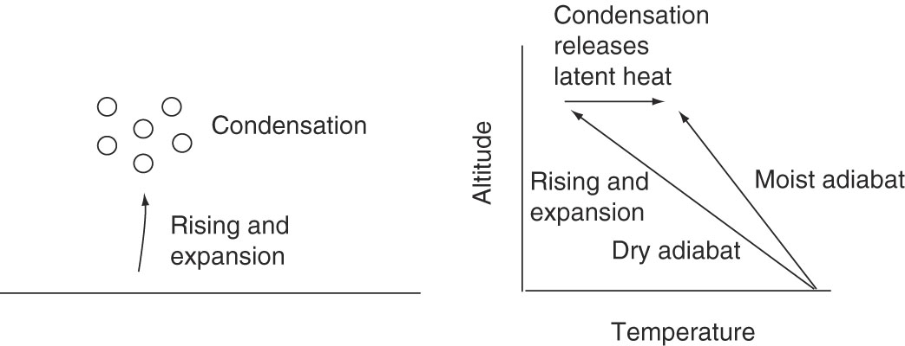
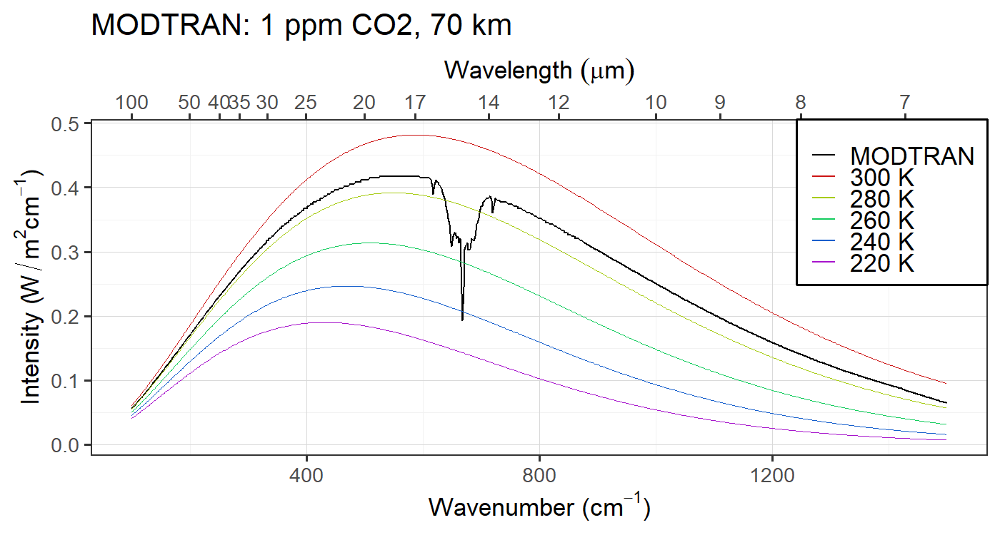
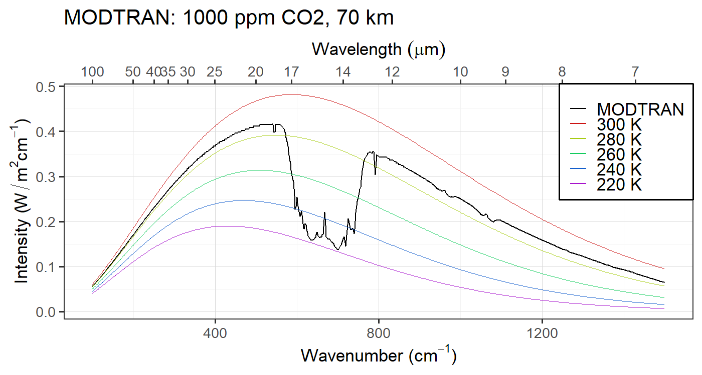
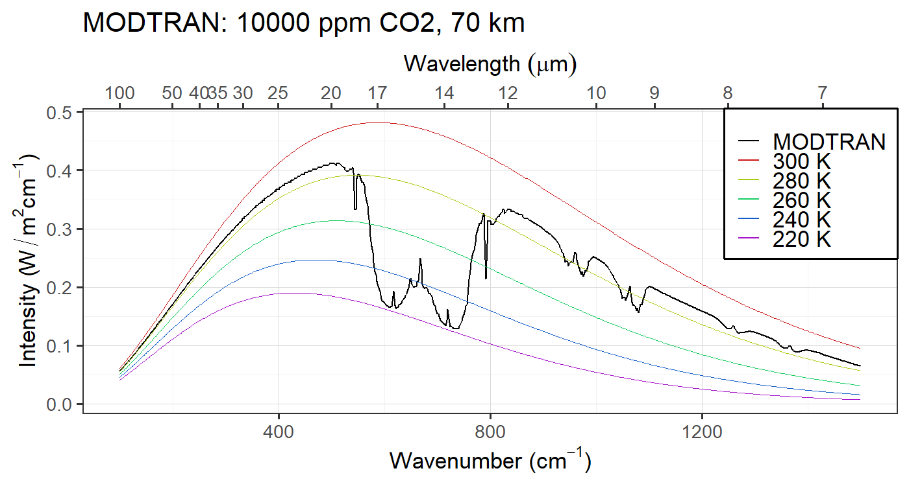

Review of the Greenhouse Effect
EES 3310/5310
Global Climate Change
Jonathan Gilligan
Class #7: Wednesday, Sept. 5 2018
Notes on Labs
- Check frequently whether you can knit your document.
- If you have trouble, ask for help
- Office hours or Email both me and Kelsea
- Remember to put “EES 3310” or “EES 5310” in the subject line
- If you have trouble, ask for help
- Remember that either PDF or Word documents are acceptable for turning in your work, so if you have trouble knitting to PDF, knit to a Word document.
- It should only take a one-time set-up to be able to knit smoothly to PDF. Kelsea and I are happy to help you set up your computer to knit to PDF.
Vertical Structure of
the Atmosphere
Terminology
- Environmental Lapse
- Measured temperature of actual atmosphere at a single time
- Compares one bit of air at one height with another bit at another height.
- Environmental lapse is different from one time or place to another.
- Adiabatic Lapse
- Change in a single parcel of air as it moves up or down
Moist Convection
Latent Heat
Moist Convection

- Latent heat warms air
- Reduces adiabatic cooling
- Moist adiabatic lapse < Dry adiabatic lapse
- Smaller lapse = less stable
- Humid air is less stable than dry air
Perspective
- Stable:
- Environmental lapse \(\le\) adiabatic lapse
- Unstable:
- Environmental lapse > adiabatic lapse
- Adiabatic lapse:
- Dry: 10 K/km
- Moist: 4-8 K/km (depends on humidity)
- Pure radiative equilibrium:
- Would produce lapse of 16 K/km: unstable
- Radiative-Convective equilibrium:
- Convection modifies environmental lapse
- Normal environmental lapse is roughly 6 K/km
(typical moist adiabatic lapse rate)
Greenhouse effect
Greenhouse effect
Greenhouse effect
|
Vertical Structure
and Saturation
Set up MODTRAN:
Go to MODTRAN (http://climatemodels.uchicago.edu/modtran/)
- Set altitude to 70 km and location to “Tropical”.
- Set CO2 to 1 ppm, all other gases to zero.
- Now increase by factors of 10 (10, 100, 1000, …)
1 ppm CO2

10 ppm CO2

100 ppm CO2
1000 ppm CO2

10,000 ppm CO2

Question
Why do we see the spike in the middle of the CO2 absorption feature?
Question
- Water vapor absorption is completely saturated.
- Why does water vapor emit at warmer temperatures than CO2?
Review Perspective
Review Perspective
- Start with bare-rock temperature
- This becomes skin temperature
- Add simple atmosphere:
- Completely absorbs longwave radiation
- Top of atmosphere: skin temperature (same as bare-rock)
- Atmosphere insulates surface \(\Rightarrow\) surface heats up
- More layers \(\Rightarrow\) bigger greenhouse effect
- Realistic longwave absorption:
- Atmosphere is not a black body
- Radiative-Convective equilibrium:
- Pure radiative equilibrium would have huge lapse
- Big lapse is unstable \(\Rightarrow\) convection
- Convection mixes hot & cold air \(\Rightarrow\)
modifies environmental lapse - Reduces greenhouse effect
- Convection mixes hot & cold air \(\Rightarrow\)
Volcanic & Nuclear Winter
Mt. Pinatubo, Philippines, 1991
Cloud Spreads
Around the planet
Cloud blocks sunlight